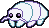
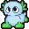
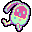
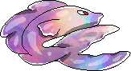
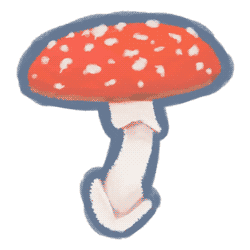

Virtual Pets
First time ever having virtual pets! I love these little guys <3333

Adopt one yourself! @ Pokémon Orphanage

Isopod (Forme 3)
"I like hugs and drinking milkshakes!"

Axolotl (Forme 2)
"I like walks in the rain, and eating strawberry shortcake!"

Tamadachi (Forme 3)
"I hope we can be the best cyber-friends!"

Yellow Mimichine
These pets mimic capsule machines. They nip anything that gets near.

Rose Balloon Dog
These pets are light as air! They gravitate toward joyful energy.

Vermillion Floweye
These pets are quite observant. Some owners find them creepy!

Cherry the Emo Pup

BonBon the Bellhead

Sunset the Galaxy Fish

Amanita muscaria
❤ Go back ❤